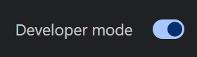
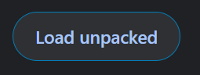

Choose the installation method that works best for you
Both work great — pick what fits your workflow.
The easiest way to install on Chrome, Edge, Brave, or other Chromium-based browsers.
Updates available every few weeks after review process.
Get from Chrome Web StoreMost up-to-date version for Chrome, Edge, Brave, and other Chromium browsers.
Requires developer mode, but gets immediate updates.
View Installation Instructions Download Latest VersionUse the Firefox MV2 manifest for temporary installs.
Not officially supported; temporary install only, settings may not persist.
View Installation Instructions Download for FirefoxStandalone desktop application for Windows 10/11 (x64).
No browser extension required. Automatically updates.
Download for WindowsStandalone desktop application for macOS.
No browser extension required. Automatically updates.
Download for macOSAppImage for Linux distributions.
Limited support, but should work on most modern distributions.
Download AppImageLaunch directly in your browser for a lightweight experience that works on mobile devices without a host computer.
Great for quick checks on the go, but expect many advanced tools to be missing.
Go to Social Stream Ninja LiteSocial Stream Ninja is open-source under the GPLv3.0 License. You can view, fork, or contribute to the project on GitHub.
Download the ZIP file and extract it to a folder on your computer.
Download ZIPNavigate to your browser's extensions page:
chrome://extensions/ for Chromeedge://extensions/ for Edgebrave://extensions/ for Brave
Toggle on "Developer mode" in the top-right corner of the extensions page.
Click "Load unpacked" and select the folder where you extracted the files.
You're ready to go! Open a supported chat platform and click the Social Stream Ninja extension icon to enable it.
View Usage GuideDownload the ZIP file and extract it to a folder on your computer.
Download ZIPIn the root of the extracted folder, back up the existing manifest.json, then rename manifest-firefox.json to manifest.json.
Only rename for Firefox; keep the MV3 manifest for Chrome/Edge installs.
Navigate to Firefox's debugging page:
about:debugging#/runtime/this-firefox
Click "Load Temporary Add-on" and select the renamed manifest.json in the extracted Social Stream Ninja folder.
Temporary install only: you may need to reload after closing Firefox, and settings persistence can be limited.
Some distributions may encounter sandbox errors when running our AppImage. View our sandbox troubleshooting guide if you see errors about SUID sandbox configuration.
Download the AppImage file to your computer.
Right-click the file and select Properties, then Permissions, and check "Allow executing file as program". Alternatively, use terminal: chmod +x SocialStreamNinja.AppImage
Double-click the AppImage to run Social Stream Ninja, or run it from terminal: ./SocialStreamNinja.AppImage
Our Discord community is ready to help you get started
Download Social Stream Ninja now and revolutionize how you interact with your audience across platforms.
![Social Stream Ninja Logo]()